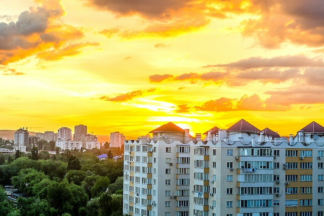

"Saya Mizan, seorang mahasiswa Desain Komunikasi Visual dengan ketertarikan mendalam pada ilustrasi, branding, desain interaktif Dalam perjalanan akademik dan profesional saya, saya telah mempelajari bagaimana desain bukan hanya soal estetika, tetapi juga tentang menyampaikan pesan dengan tepat dan efektif."
Mizan | PhotoGraphy
“Setiap karya yang saya sertakan dalam portofolio ini adalah hasil dari proses pemikiran yang mendalam, eksplorasi kreatif, dan eksperimen teknis. Saya percaya bahwa desain memiliki kekuatan untuk mengubah persepsi, membangun identitas, dan menciptakan koneksi yang kuat dengan audiens.”

Singapura
Foto Apartemen disebuah kota
Menggunakan kemera DSLR Canon

Jepang
Foto Apartemen disebuah kota
Menggunakan kemera DSLR Canon

Malaysia
Foto Apartemen disebuah kota
Menggunakan kemera DSLR Canon

Indonesia
Foto Apartemen disebuah kota
Menggunakan kemera DSLR Canon
Catatan
Keikhlasan Dalam Menerima Takdir
"Setiap takdir yang Allah tetapkan untuk kita adalah bagian dari rencana yang lebih besar, yang mungkin kita belum mampu memahaminya sepenuhnya. Ketika kita dihadapkan pada situasi yang sulit atau tak terduga, ingatlah bahwa Allah Maha Mengetahui apa yang terbaik untuk kita. Keikhlasan dalam menerima takdir adalah tanda keimanan yang kuat. Jangan pernah merasa kecewa dengan ketetapan-Nya, karena apa yang menurutmu buruk bisa jadi adalah yang terbaik menurut Allah. Luruskan niat, perbanyak doa, dan teruslah berusaha. Percayalah, di balik setiap kesulitan ada kemudahan yang Allah persiapkan untuk hamba-Nya yang sabar dan berserah diri."
#mizanbaseff
Kebodohan Manusia Di Zaman Sekarang
"Sungguh........ banyak yang meninggalkan sang pemberi rezeki (tuhan) dengan alasan mencari rezeki. hmmmm... Allah tidak menunda bahagiamu hanya saja dia ingin kamu lebih bahagia dengan ujian kesabaran .... apa yang sudah Allah takar tidak mungkin tertukar.... mungkin kalian bisa bilang kalian meninggalkan nya karena kalian punya kendala tapi tanpa kalian sadari Allah lah yang memiliki kendali nya... maka dari itu berbisik lah ke tanah untuk semua masalahmu dengan bisikan yang di dengar oleh seluruh penghuni langit (sujud)."
#mizanbaseff
Romantisnya Tuhan
t"Terkadang Allah hanya menunda sesuatu yang indah untuk menjadikanya lebih indah.. entah harus merasa malu atau terharu Allah masih saja mencurahkan nikmat nya seakan dia tak pernah perduli akan tumpukan dosa dosaku.. aku menyadari berdoa kepadanya adalah hall paling romantis.. yaaa meski di awali dengan tangis namun pasti berujung manis... maka biarkan bumi yang mendengarkan langit yang menghantarkan dan Allah yang mengabulkan...... ... dan dia juga pernah berkata.. jika di depan membuat mu takut dan di belakang membuat mu luka maka lihatlah keatas Allah tak pernah gagal menolong mu atas setiap ujian. The romance of my God is that there is no love above love"
#mizanbaseff

Ketenangan
"ketenangan apa lagi yang kalian carii... bukan kah orang yang meninggal saja masih minta di doakan agar tenang? ........ bukan kah tidak ada ketenangan dalam sebuah hukuman...?? tentu saja tidak ada kalaupun ada itu susah jadi sadarlah...bahwa dunia yang kalian kejar,..... ketenangan yang kalian cari... itu mustahil karena dunia ini hanyalah hukuman bagi nabi adam .. ...... jika ingin tenang maka bersihkan hati dan syukuri nikmatnya tuhan itu adalah kunci dari dunia..... dunia akan mengejar mu dengan dua hall itu maka lakukanlah jika ingin ketenangan."
#mizanbaseff
Seni Termudah Untuk Kecewa
"seni termudah untuk kecewa adalah berharap kepada manusia.... hmmm.. memang susah untuk selamat dari lisan nya manusia .. Allah saja di fitnah mempunyai anak ... dan nabi saja di fitnah sebagai penyihir .. maka masih pantaskah kita berharap untuk selamat dari lisan nya manusia yang hina ituu?... susah dan amat susah untuk selamat dari lisan manusia maka jangan kamu berharap kepadanya serahkan semua pada tuhan mu karena dia pemilik dunia dan lisan nya manusia."
#mizanbaseff
Aku Dan Ayah
"aku dan ayah adalah dua orang yang gagal... aku gagal membahagiakanya.. dan dia gagal menemaniku sampai aku sukses... karna kematian lah pemenangnya... miris seperti ter iris... .. ayah adalah superhero nyata dalam hidup ku.. dia adalah penyelamat ku... hmm.. ... yaaa... memang dia sudah tida ada tapi semua cerita tentang nya adalah pengalaman bagi ku.. aku tak pernah lupa akan kasih sayang nya.... aku rindu peluknya.... aku rindu canda nya ... aku sangat rindu semua tentang nya.... kalau ada satu kesempatan bertemu dengan nya ingin rasanya untuk menceritakan hari hari ku.... dia adalah pendengar terbaik untuk ku... hingga saat dia tidak ada... aku berhenti untuk bercerita karna aku kehilangan orang yang ku cintai dalam kisah hidup ku..... ..... hmm yaaa diam hanya dia yang aku lakukan untuk mengobati semua itu... menurutku itu adalah cara terbaik.... karna tidak ada lagi tempat bercerita setelah dia tiada ....... tuhaannnnn... sampai kan padanya aku sangat rindu padanya.."
#mizanbaseff